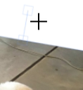

Infographics Web Editors
- Bogdan-Andrei Latu
- Ene-Eliza Lorena
- Emilian Onofras
Ghid de utilizare
Accesing the InEd will result in reaching the home page . In order to immediatly start the creation of a new infograf press the "Editor" button , which is situated at end of the top-left menu .
Prima pagina
Upon pressing the editor button you will be transported this sub-page , which contains all the functionalities required to create and store your project.
Pagina Editor
In order to add a graph to the project all you need to do is toggle the graph menu ,action performed by pressing on the "pie chart" icon from the left sidebar. In the graph menu you will find a space in which to choose the desired graph style , followed a place to imput the csv file that will become a graph. Pressing the "add" button after filling the desired configuration is needed in order for the text to appear in the project space .
Add Graph
In order to add text to the project all you need to do is toggle the text menu ,action performed by pressing on the "A" from the left sidebar. In the text menu you will find a space in which to place the desired sentence/paragraph , followed by various meens to customize the appearance of the said text. Pressing the add text button after filling the desired configuration is needed in order for the text to appear in the project space .
Inserare Text
Introducing basic shapes is performed by toggling the shape menu signified by an empty square , situated in the left sidebar (3rd button from top to bottom). Similarly to the text there exists limited customization.
Add Shapes
Adding an image from your local files is performed by toggling the image menu situated in the left sidebar (4th button from top to bottom). Adding an image is realized by pressing the "Browse" button followed by choosing the desired image from your local file and pressing the "Add Image" button.
Add Picture
Resizing the project space in order to fit your is performed by toggling the resize menu situated in the left sidebar (5th button from top to bottom) . After altering the existing dimensions pressing the "Enter" button on your keyboard or mouse clicking in the page will result in the desired reshape occuring.
Resize/Recolor Canvas
Deleting an existing object from the project space is performed by clicking on the said object at which point the delete option will manifest itself in the left sidebar (6th button from top to bottom which only appears when an object is selected) .
Delete Object
After Delete
Resizing an existing object from the project space is performed by selecting the object (mouse right-click) at which point 8 delimitator points will appear , mouse over one of the delimitators, right click while the cursor looks like the cursor in the bottom image then drag to the desired dimension.
Resize Object
Moving an existing object inside the project space is performed by "mousing over" the object right click while the cursor looks like the cursor in the bottom image then drag to the desired destination.
Move Object
Rotating an existing object from the project space is performed by selecting the object (mouse right-click) at which point above the object will appear a box connected to the object by a line , mouse over the box right click while the cursor looks like the cursor in the bottom image then drag to the desired angle.
Rotate Object

Saving a project to the local file is performed by toggling the save menu which is situated at the right-most corner , then chooshing the desired file format by pressing the coresponding button.